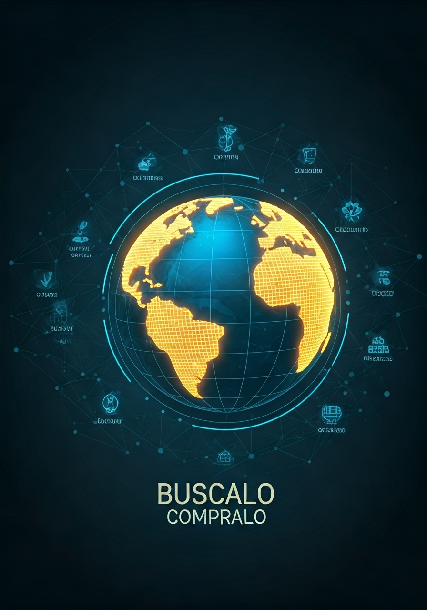

.png)




En un mundo donde las compras en línea han revolucionado la forma en que las personas adquieren productos y servicios, BUMPRDO surge como una respuesta estratégica a las necesidades del consumidor moderno. A medida que el comercio digital ha evolucionado, los compradores se han enfrentado a desafíos como la sobrecarga de opciones, la falta de transparencia en precios y la dificultad para encontrar productos confiables.
BUMPRDO nace con la misión de simplificar este proceso, actuando como un intermediario de ventas confiable que conecta compradores con oportunidades únicas. Gracias a la tecnología y un enfoque inteligente, esta plataforma optimiza la búsqueda, negociación y adquisición de productos, asegurando que cada compra sea rápida, segura y eficiente.
Desde su creación, BUMPRDO ha apostado por la innovación, utilizando herramientas digitales avanzadas para facilitar transacciones y garantizar una experiencia de compra fluida. Con una visión de crecimiento global, la empresa se posiciona como el puente perfecto entre lo que los consumidores quieren y lo que realmente necesitan.
Facilitamos la conexión entre compradores y vendedores, asegurando acceso rápido, seguro y eficiente a los productos que buscan. Con tecnología y estrategias de venta, optimizamos cada etapa del proceso de compra para ofrecer soluciones accesibles y confiables, impulsando el comercio con transparencia y compromiso.
Ser la plataforma líder en intermediación de ventas, conectando compradores con productos de calidad y facilitando transacciones seguras y eficientes. Nos proyectamos como un referente en el comercio digital, integrando tecnología innovadora y estrategias de venta para expandir oportunidades de negocio a nivel global.
BUMPRDO nació de una visión clara: simplificar el proceso de compra y venta, conectando compradores con productos y oportunidades sin complicaciones. La idea surgió cuando Roxana Salazar, una estratega apasionada por el comercio digital, notó que muchas personas enfrentaban dificultades para encontrar productos confiables a buen precio. Con un espíritu emprendedor y aprovechando el poder de la tecnología, Roxana comenzó a investigar herramientas gratuitas y estrategias de venta online. Su enfoque fue claro: hacer que el comercio sea accesible, seguro y eficiente.
En esta búsqueda, encontró inteligencia artificial, plataformas digitales y sistemas de gestión que podían optimizar la experiencia de compra. Así, nació BUMPRDO, una empresa diseñada para ser el puente entre lo que los clientes buscan y lo que realmente necesitan. Desde sus primeros pasos, BUMPRDO se construyó sobre principios de transparencia, eficiencia e innovación. Con la ayuda de herramientas digitales y una estrategia sólida, Roxana desarrolló la marca, su identidad visual y los procesos clave para que la empresa funcionara sin costos elevados.
Hoy, BUMPRDO se proyecta como un referente en intermediación de ventas, con la misión de conectar compradores con productos confiables y garantizar que cada transacción sea segura y efectiva. Lo que empezó como un proyecto se ha convertido en una marca con visión global, lista para expandirse y transformar el comercio digital.
Conectamos compradores con oportunidades únicas, ofreciendo una experiencia de compra inteligente y eficiente. Eliminamos la complejidad del proceso de adquisición, asegurando productos confiables, precios justos y entregas seguras a través de tecnología y estrategias de venta innovadoras.
BUMPRDO tiene el potencial de competir con grandes empresas internacionales en el ámbito de intermediación de ventas y comercio digital. Algunas compañías reconocidas que operan en este sector incluyen:
Amazon: Aunque es un gigante del comercio electrónico, su enfoque es más en la venta directa, mientras que BUMPRDO se especializa en intermediación estratégica, conectando compradores con oportunidades únicas.
Alibaba: Se centra en conectar proveedores con compradores, pero BUMPRDO puede diferenciarse ofreciendo asesoría personalizada y procesos optimizados para garantizar compras inteligentes.
eBay: Funciona como un marketplace, pero BUMPRDO puede superar su modelo al ofrecer transacciones más seguras y eficientes, eliminando la incertidumbre de los compradores.
Mercado Libre: En Latinoamérica, es un referente en comercio digital, pero BUMPRDO puede destacarse con un servicio más personalizado y transparente, asegurando mejores precios y calidad.
Amway y Avon: Son líderes en venta directa, pero BUMPRDO puede ofrecer una plataforma más flexible y accesible, sin depender de modelos de distribución cerrados.
La clave para superar a estas empresas es enfocarse en la eficiencia, transparencia y tecnología, asegurando que cada compra sea rápida, segura y sin complicaciones.